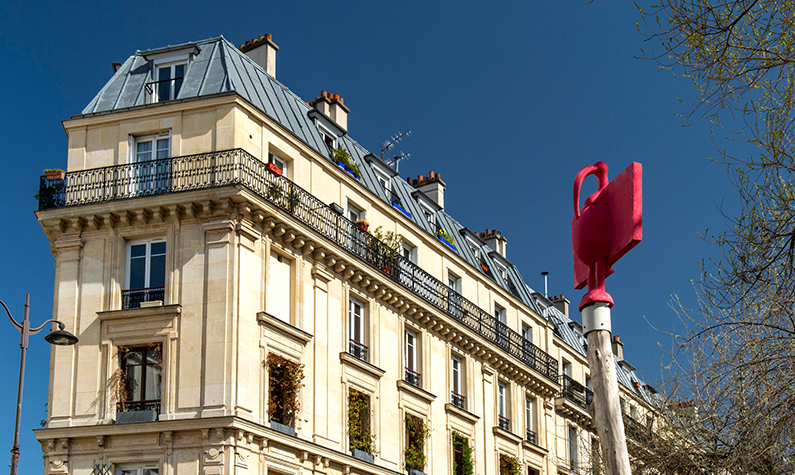

soundways is a platform dedicated to creating, editing, and sharing
augmented reality audio creations.
available on mobile devices, soundways offers spatialized sound
playback based on the user's trajectory, orientation, and geolocation:
a re-listening of the territory through radio, musical, or documentary
creations.